Chicago, Newberry Library, Ms. 54.1
[folio 57r]
[1]
Tractatus iste super musicam composuit venerabilis ma
gister Philippus de Vitriaco.
Omni desideranti notitiam artis mensurabilis
musicae tam novae quam veteris optinere [corr. obtinere] certas
hic rationes praesentes sub brevi compendio
pro posse meo propono fideliter adsignare. Cum
antiquitatem per Franconem notum est omnibus
tradidisse novitatem, quae per Philippum
in maiori parte subtiliter invenisse, et quia
voces seu notulas proportionabiliter oportet
omnes in hoc opere mensurare prout longae vel breves semibreves ac
minimae figurantur, ergo ad figurationem et valorem ipsarum breviter procedamus.
This treatise on music was composed by the venerable Master Philippe de Vitry. For anyone wishing to gain knowledge of the techniques of mensural music, both new and old, I venture here to outline faithfully, insofar as I able, certain rules presented in a short compendium. In the olden days, Franco was noted to have passed these on; more recently, they were to have been subtly uncovered by Philip. Since, in this work, it is correct to measure pitches or notes proportionally, and accordingly, the longs or breves, semibreves and minims are figured. Therefore, to their figuration and value we may quickly proceed.
[2]
Longa sub forma quadrata figurata habens tractum a parte dextra, descen
dentem vel adscendentem, vel duos quorum dextram [corr. dexter] excedit in longitudine
sinistrum. Et tunc illa nota dicitur plica longa et valet tria tempora in
modo perfecto, duo autem in imperfecto.
The long, is figured as a quadratic form, with a stroke from the right side, descending or ascending, or with two strokes, of which the right is longer than the left. This note is called a plica longa and it is worth three tempora in the perfect mode; two, however, in the imperfect.
[3]
Modus imperfectus est ipsas breves vel tempora vel [corr. per] numerum binarium computare
dicitur imperfectus eo quod numerus binarius est imperfectus. Numerus vero ternarius
est
perfectus assumptus a trinitate, scilicet, pater, filius, et spiritus sanctus ubi
est summa perfectio.
The mode is imperfect when these breves or tempora are computed through a binary number. It is said to be imperfect in the same way that the binary number is imperfect. Indeed, the ternary number is perfect having been taken from the Trinity - that is, the Father, Son and Holy Spirit - wherein there exists the highest perfection.
[4]
Modus perfectus cognoscitur per pausas, quando pausae inter longas sunt perfectae
vel quando de longa usque ad aliam longam per numerum ternarium melius
quam per binarium tempora computantur ut hic patet inferius.
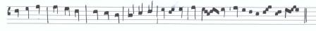
The mode is imperfect when these breves or tempora are computed through a binary number. It is said to be imperfect in the same way that the binary number is imperfect. Indeed, the ternary number is perfect having been taken from the Trinity - that is, the Father, Son and Holy Spirit - wherein there exists the highest perfection.
[5]
Item longa licet valeat tria tempora in modo perfecto, sicut dictum est tamen tribus
imperficitur, videlicet quando sola brevis sequitur, aut praecedit, vel quando plures
quam
tres breves ipsam sequuntur similiter imperficitur ut hic.
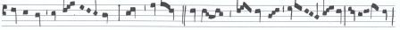
The mode is imperfect when these breves or tempora are computed through a binary number. It is said to be imperfect in the same way that the binary number is imperfect. Indeed, the ternary number is perfect having been taken from the Trinity - that is, the Father, Son and Holy Spirit - wherein there exists the highest perfection.
[6]
Si autem duae vel tres breves tantum sequuntur ipsam longam a
[folio 57v]
nulla sola brevi praecedente, a qua posset imperfici, perfecta est longa ipsa,
nisi punctus divisionis ponatur inter primam brevem et secundam,
vel inter primam et alias subsequentes.
The mode is imperfect when these breves or tempora are computed through a binary number. It is said to be imperfect in the same way that the binary number is imperfect. Indeed, the ternary number is perfect having been taken from the Trinity - that is, the Father, Son and Holy Spirit - wherein there exists the highest perfection.
[7]
C.a
Item longa ante longam in modo perfecto perfecta est. Et longa post quam punctus qui
dicitur perfectus
immediate ponitur similiter perfecta in modo perfecto ut hic.
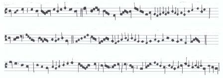
The mode is imperfect when these breves or tempora are computed through a binary number. It is said to be imperfect in the same way that the binary number is imperfect. Indeed, the ternary number is perfect having been taken from the Trinity - that is, the Father, Son and Holy Spirit - wherein there exists the highest perfection.
[8]
Est quaedam alia nota sub forma quadrata habens tractum a parte
dextra, vel duos quorum dexter et contra, sicut ipsa longa, sed in duplo
est latior ipsa longa, et tunc ipsa nota dicitur duplex longa, et
valet 6 [expan. sex] tempora in modo perfecto, et quatuor in imperfecto. Et imperficitur duobus modis
tantum, videlicet, a sola brevi sequenti non praecedenti, sicut inferius hic
probabo, vel quando plusquam3 [expan. tres] breves sequuntur ipsam dupplicem [corr. duplicem] , et tunc
non valet nisi quinque tempora, ut hic patet.
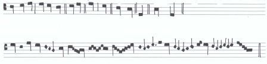
The mode is imperfect when these breves or tempora are computed through a binary number. It is said to be imperfect in the same way that the binary number is imperfect. Indeed, the ternary number is perfect having been taken from the Trinity - that is, the Father, Son and Holy Spirit - wherein there exists the highest perfection.
[9]
Breves sub forma quadrata figurantur carens omni tractu.
Si vero habent tractum a parte sinistra, vel duos, quorum sinister
sit longior dextro tractu, tunc prima nota,plica brevis
appellatur, et valet tres semibreves in tempore perfecto.Tempus semibrevium
perfectum, est trium semibrevium assumptio pro qualibet brevi vel proferendo
valorem ipsarum, vel ipsius perfectionis numerando, tempus imperfectum est,
[folio 58r]
quod valorem tantum semibrevium numeratur, variatur, et mensuratur, ut hic.
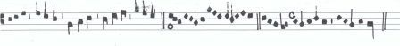
The mode is imperfect when these breves or tempora are computed through a binary number. It is said to be imperfect in the same way that the binary number is imperfect. Indeed, the ternary number is perfect having been taken from the Trinity - that is, the Father, Son and Holy Spirit - wherein there exists the highest perfection.
[10]
Item brevis imperficitur tribus modis, videlicet quando sola semibrevis
ipsam sequitur, aut praecedit, vel quando plures quam tres semibreves
ipsam similiter subsequuntur ut hic.
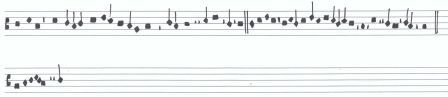
The mode is imperfect when these breves or tempora are computed through a binary number. It is said to be imperfect in the same way that the binary number is imperfect. Indeed, the ternary number is perfect having been taken from the Trinity - that is, the Father, Son and Holy Spirit - wherein there exists the highest perfection.
[11]
Et si duae vel 3es [expan. tres] tantum sequuntur nulla semibrevi praecedente, sola
praedicta dicitur talis brevis, nisi punctus divisionis ponatur, inter vel secundam
et primam semibrevem, vel inter primam et alias subsequentes.
Item sicut longa ante longam perfecta est. Ita brevis ante brevem
dicitur perfecta, cum punctus immediate positus perficit ipsam brevem
tempore imperfecto, nisi per divisione modi forsitan assignetur, ut hic.
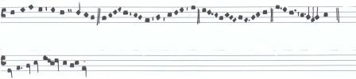
The mode is imperfect when these breves or tempora are computed through a binary number. It is said to be imperfect in the same way that the binary number is imperfect. Indeed, the ternary number is perfect having been taken from the Trinity - that is, the Father, Son and Holy Spirit - wherein there exists the highest perfection.
[12]
Item brevis imperficitur duppliciter [corr. dupliciter] , videlicet a sola minima sequenti.
Et non a praecedenti, vel a pluribus quam 3 [expan. tres] ipsam brevem
sequentibus, licet multi teneant quod brevis imperficiatur a parte
praecedenti per minimam, et duplex longa imperficiatur a brevi
similiter praecedenti. Dico quod falsum est. Nam brevis ipsa non
imperficitur a minima, quantum ad totum cum minima non subiciatur
brevi, immo semibrevi. Ergo quantum ad partem quae est semibrevis,
ex hoc arguo, quotienscumque brevis imperficitur, a minima non imper
ficitur, quantum ad totum, sed quantum ad partem. Videlicet, ad semibrevem,
et ita adad semibrevis quam semibrevem, et longa ante longam
nunquam possunt perfici a parte praecedenti propter partem subsequentem,
ut hic.
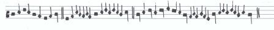
The mode is imperfect when these breves or tempora are computed through a binary number. It is said to be imperfect in the same way that the binary number is imperfect. Indeed, the ternary number is perfect having been taken from the Trinity - that is, the Father, Son and Holy Spirit - wherein there exists the highest perfection.
[13]
Item brevium quaedam recta et quaedam altera, nuncupatur, recta
[folio 58v]
valet unum. Altera vero duo.Unde quotienscumque duae breves inven
iuntur inter duas longas, prima recta est, alteraque secunda, et vo
catur altera, quia alteratur. Nam sua [corr. alteratur natura sua] cum ipsa brevis naturaliter tantum unum
tempus valet et duo quotiens alteratur. Item quando duae breves reperiuntur inter
punctum divisionis et longam, velinter longam et punctum,
secunda similiter alteratur, ut hic.
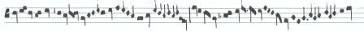
The mode is imperfect when these breves or tempora are computed through a binary number. It is said to be imperfect in the same way that the binary number is imperfect. Indeed, the ternary number is perfect having been taken from the Trinity - that is, the Father, Son and Holy Spirit - wherein there exists the highest perfection.
[14]
Semibrevis ad modum corporis obliqui figuratur quae valet tres
minimas in maiori prolatione, duas autem in minori prolatione.
Multi ignorantes dicunt quod semibreves semper valere 3 [expan. tres] minimas.
Sed hoc est contra Franconem, qui dixit, mentione facta de longis et
semibrevibus et de similibus. Idem iudicium habeatur quod in longis
et in brevibus invenitur perfectum et imperfectum, per distinctionem modi tempus.
Ita dico quod quod [corr. quod] semibrevibus idem est invenire per distinctionem ma
ioris prolationis et minoris. maior prolatio est larga, vel lata
mensura, dans unicuique semibrevi 3 [expan. tres] minimas vel valorem.
Minor prolatio est, brevis et modica mensura sub qua duae
minimae pro semibrevi, tantummodo possunt proferri, ut hic.
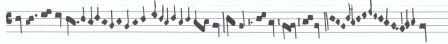
The mode is imperfect when these breves or tempora are computed through a binary number. It is said to be imperfect in the same way that the binary number is imperfect. Indeed, the ternary number is perfect having been taken from the Trinity - that is, the Father, Son and Holy Spirit - wherein there exists the highest perfection.
[15]
Inde [corr. Item] semibrevis imperficitur 3ibus [expan. tribus] modis sicut brevis et longa, videlicet quando sola
minima ipsam sequitur aut praecedit, vel quando plures quam tres sequuntur
minimae, sicut de longa et brevi superius est dictum, ut hic.
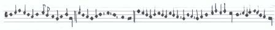
The mode is imperfect when these breves or tempora are computed through a binary number. It is said to be imperfect in the same way that the binary number is imperfect. Indeed, the ternary number is perfect having been taken from the Trinity - that is, the Father, Son and Holy Spirit - wherein there exists the highest perfection.
[16]
Si vero duae minimae tantum, 3es [expan. tres] vel ipsam sequuntur, nulla sola minima
praecedente, perfecta est, nisi punctus divisionis ponatur inter primam, et secundam,
vel inter primas et alias, si fuerint subsequentes, ut hic.
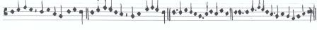
The mode is imperfect when these breves or tempora are computed through a binary number. It is said to be imperfect in the same way that the binary number is imperfect. Indeed, the ternary number is perfect having been taken from the Trinity - that is, the Father, Son and Holy Spirit - wherein there exists the highest perfection.
[17]
Item semibrevis alteratur contra sicut brevis scilicet quando duae semibreves inveniuntur
[folio 59r]
inter duas breves, vel inter punctum divisionis et brevem, vel inter punctum et brevem, [corr. brevem et punctum,] ut hic.

The mode is imperfect when these breves or tempora are computed through a binary number. It is said to be imperfect in the same way that the binary number is imperfect. Indeed, the ternary number is perfect having been taken from the Trinity - that is, the Father, Son and Holy Spirit - wherein there exists the highest perfection.
[18]
Minima, tot modis alteratur, unde ratio alterationis est ista, quia ubicumque
naturale aliquid deest, artificialiter debet reparari, aut remanebit imperfectum,
sed quando duae breves solae inveniuntur, vel duae semibreves, et idem de minimis
deficit. Ubi trinitas, ibi perfectio, ergo necesse est primam reparare, videlicet,
per alterationem
unius illarum, scilicet secundae. Si dicatur una illarum brevium potest esse longa
imperfecta,
dico quod non. Quia propter longam sequentem, necesse esset ipsam esse perfectam
per regulam supradictam, longa autem et contra. Unde brevis alteratur ad modum
perficiendum, semibrevis ad tempus, et minima aperfectione, quod modus,
tempus, vel prolatio, hic similiter sunt perfecta, ut hic.
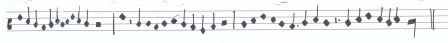
The mode is imperfect when these breves or tempora are computed through a binary number. It is said to be imperfect in the same way that the binary number is imperfect. Indeed, the ternary number is perfect having been taken from the Trinity - that is, the Father, Son and Holy Spirit - wherein there exists the highest perfection.
[19]
Et nota est quod duplex est punctus de plurimum supradixi, est punctus perfectionis,
qui semper perficit longam in utroque modo, et brevem in utroque tempore, et semi
brevem in utraque prolatione. Est autem aliquis punctus divisionis, et ille
punctus imperficit longam, dividendo breves, et imperficit brevem dividendo
semibreves, et imperficit semibrevem dividendo minimasb
The mode is imperfect when these breves or tempora are computed through a binary number. It is said to be imperfect in the same way that the binary number is imperfect. Indeed, the ternary number is perfect having been taken from the Trinity - that is, the Father, Son and Holy Spirit - wherein there exists the highest perfection.
[20]
C.c Unde videndum
est quomodo cognoscitur punctus ille divisionis a puncto perfectionis, cum unus
habeat imperficere figuras, et alius perficere, sicut dixi. Ubicumque punctus
ponitur post longam, perfectionis esse dicitur; quando vero post minimam, ponitur
pro divisione
tunc adsignatur. Et notaest quod triplex est divisio, et triplex est perfectio,
videlicet, modi, temporis, et prolationis.
The mode is imperfect when these breves or tempora are computed through a binary number. It is said to be imperfect in the same way that the binary number is imperfect. Indeed, the ternary number is perfect having been taken from the Trinity - that is, the Father, Son and Holy Spirit - wherein there exists the highest perfection.
[21]
C.d Item si punctus ponatur
inter duas breves, debet dividere modum, nisi forte breves essent de tempore im
perfecto, post quas aliqua semibrevis sequeretur sola, quae in cincopam
reducitur ad praedictam brevem puncto perfectionis punctuatam.
The mode is imperfect when these breves or tempora are computed through a binary number. It is said to be imperfect in the same way that the binary number is imperfect. Indeed, the ternary number is perfect having been taken from the Trinity - that is, the Father, Son and Holy Spirit - wherein there exists the highest perfection.
[22]
C.e Si autem
punctus ponatur immediate post brevem semibrevi sola sequente
pro perfectione temporis, dicitur semper esse. Item si punctus ponitur post semi
brevem, dicitur pro perfectione prolationis, videlicet semibrevis. Atque si post
semibrevem illam punctuatam sequeretur tunc semibrevis, pro divisione
temporis assignatur, nisi forte semibreves semibrevessemibreves ille sint de minori
prolatione, post quas sequeretur aliqua sola minima quae reducitur
ad semibrevem praedictam, puncto perfectionis punctuatam per cincopam
et sic apparet qualiter cognoscitur unus punctus ab alio, ut hic.
[folio 59v]
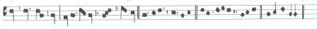
The mode is imperfect when these breves or tempora are computed through a binary number. It is said to be imperfect in the same way that the binary number is imperfect. Indeed, the ternary number is perfect having been taken from the Trinity - that is, the Father, Son and Holy Spirit - wherein there exists the highest perfection.
[23]
Cum duplex sit modus, tempus, et prolatio, sicut dixi. Videndum
est de signis per quae distinguitur quadrangulus cum tribus tractulis
ponitur pro modo perfecto, quadrangulus vero cum duobus tractulis
pro modo imperfecto ponitur ut hic.
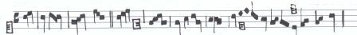
The mode is imperfect when these breves or tempora are computed through a binary number. It is said to be imperfect in the same way that the binary number is imperfect. Indeed, the ternary number is perfect having been taken from the Trinity - that is, the Father, Son and Holy Spirit - wherein there exists the highest perfection.
[24]
Circulus ponitur pro tempore perfecto. Semicirculus pro tempore
imperfecto ut hic.
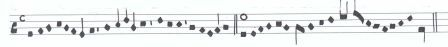
The mode is imperfect when these breves or tempora are computed through a binary number. It is said to be imperfect in the same way that the binary number is imperfect. Indeed, the ternary number is perfect having been taken from the Trinity - that is, the Father, Son and Holy Spirit - wherein there exists the highest perfection.
[25]
Sicut est dare distinctionem per signa, inter modum perfectum, et
imperfectum. Ita est dare aliqua distinctio inter maiorem prolationem
et minorem, si contingat illam variare bene dico quod in signo tem
poris illius cuius fuerit superius assignato debent poni tres puncti
pro maiori prolatione, duo autem pro minori, ut hic.
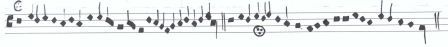
The mode is imperfect when these breves or tempora are computed through a binary number. It is said to be imperfect in the same way that the binary number is imperfect. Indeed, the ternary number is perfect having been taken from the Trinity - that is, the Father, Son and Holy Spirit - wherein there exists the highest perfection.
[26]
Item modus, tempus, et prolatio, per rubeas distinguuntur figuras.
Unde quandocumque rubea ponitur longa, ponitur ad dextram. Ita quod si
nigrae fuerint de modo perfecto, rubeae erunt erunt [corr. erunt] de modo
imperfecto et e contrario ut hic.

The mode is imperfect when these breves or tempora are computed through a binary number. It is said to be imperfect in the same way that the binary number is imperfect. Indeed, the ternary number is perfect having been taken from the Trinity - that is, the Father, Son and Holy Spirit - wherein there exists the highest perfection.
[27]
Breves ponuntur rubeae ad differentiam temporis. Ita quod si nigrae breves
fuerint de tempore perfecto, rubeae erunt de imperfecto, et e contrario. Nisi
cum aliqua forsitan ordinetur, sicut in moteti tenore qui dicitur
in arboris, vel in tenore de In nova fert animus, ut hic.
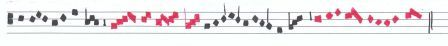
The mode is imperfect when these breves or tempora are computed through a binary number. It is said to be imperfect in the same way that the binary number is imperfect. Indeed, the ternary number is perfect having been taken from the Trinity - that is, the Father, Son and Holy Spirit - wherein there exists the highest perfection.
[folio 60r]
[28]
Semibreves rubeae ponuntur ad differentiam prolationis ut si nigrae fue
rint de maiori prolatione rubeae erunt de minori, et e contrario.Nisi semi
breves forsitan cum aliqua brevi ordinetur [corr. ordinentur] , quia tunc ponentur ad diffe
rentiam temporis [corr. prolationis] , sicut in tenore de In arboris invenitur ibi.
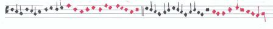
The mode is imperfect when these breves or tempora are computed through a binary number. It is said to be imperfect in the same way that the binary number is imperfect. Indeed, the ternary number is perfect having been taken from the Trinity - that is, the Father, Son and Holy Spirit - wherein there exists the highest perfection.
[29]
Sincopa est divisio cuiuscumque figurae ad partes separatas quae ad invicem redu
cuntur perfectiones numerando, et tripliciter videlicet in modo, tempore et prolatione.
Si fiat in modo, aut fiat in modo perfecto aut imperfecto. Si in modo perfecto,
tunc est reperire 3es [expan. tres] breves separatas. Vel valorem pro longa, vel
unam brevem cum una pausa duorum temporum quae reducatur ad hanc
brevevem [corr. brevem] . Si autem fiat in modo imperfecto, tunc est reperire
breves tantum separatas quae perfectiones modi numerando reducantur ad invicem, ut
hic.
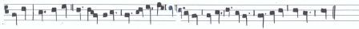
The mode is imperfect when these breves or tempora are computed through a binary number. It is said to be imperfect in the same way that the binary number is imperfect. Indeed, the ternary number is perfect having been taken from the Trinity - that is, the Father, Son and Holy Spirit - wherein there exists the highest perfection.
[30]
Si autem fiat in tempore fiat aut in tempore perfecto aut imperfecto. Si fiat in
tempore perfecto, tunc brevis dividitur in3 [expan. tres] semibreves separatas tantum, vel va
lorem quae similiter ad invicem reducuntur, vel ipsa puncto perfectionis punc
tuatur cuius tertia pars ad aliquam semibrevem solam ad ipsa [corr. ipsam] reducitur separata
ut hic.
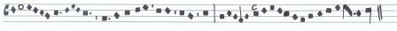
The mode is imperfect when these breves or tempora are computed through a binary number. It is said to be imperfect in the same way that the binary number is imperfect. Indeed, the ternary number is perfect having been taken from the Trinity - that is, the Father, Son and Holy Spirit - wherein there exists the highest perfection.
[31]
Similiter in prolatione, fit duplex aut in maiori prolatione aut
in minori. Si autem in maiori, tunc est invenire 3 [expan. tres] minimas per semi
brevem separatas quae numerando perfectiones prolationis ad invicem reducuntur.
Si autem fiat in minori prolatione, tunc est invenire duas minimas tantum
pro semibreve separatas qui [corr. quae] numerando perfectiones ipsius prolationis ad in
vicem reducuntur ut hic.

The mode is imperfect when these breves or tempora are computed through a binary number. It is said to be imperfect in the same way that the binary number is imperfect. Indeed, the ternary number is perfect having been taken from the Trinity - that is, the Father, Son and Holy Spirit - wherein there exists the highest perfection.
[32]
Ligaturarum alia ascendens, alia descendens. Et quia ars loquitur de primis,
mediis et ultimis earum, idcirco de primis et ultimis ligaturae descen
dentis, primo videamus sicut dicit ars prima descendens sine tractu lon
ga est, sed si habuerit tractum a parte sinistra descendentem, dicitur esse brevis.
Similiter omnis ultima ligaturae descendentis longa est, nisi fuerit
in aliquo corpore figurata, ut hic inferius patebit.
[folio 60v]
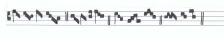
The mode is imperfect when these breves or tempora are computed through a binary number. It is said to be imperfect in the same way that the binary number is imperfect. Indeed, the ternary number is perfect having been taken from the Trinity - that is, the Father, Son and Holy Spirit - wherein there exists the highest perfection.
[33]
Nunc de primis et ultimis ligaturis videamus sicut ars quod prima
ascendens, semper est brevis, nisi a parte dextra tractum habuerit descenden
tem. Similiter omnis ultima ascendens brevis, nisi ponatur super penultimam
vel a parte dextra tractum ascendentem similiter descendentem, ut hic.
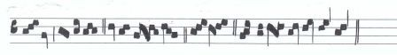
The mode is imperfect when these breves or tempora are computed through a binary number. It is said to be imperfect in the same way that the binary number is imperfect. Indeed, the ternary number is perfect having been taken from the Trinity - that is, the Father, Son and Holy Spirit - wherein there exists the highest perfection.
[34]
Item omnis tractus ascendens in prima positione ligatura descendentis vel
ascendentis facit primas esse semibreves. Et omnes mediae sunt breves
cuiuscumque sint ligaturae. Ut hic.
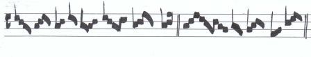
The mode is imperfect when these breves or tempora are computed through a binary number. It is said to be imperfect in the same way that the binary number is imperfect. Indeed, the ternary number is perfect having been taken from the Trinity - that is, the Father, Son and Holy Spirit - wherein there exists the highest perfection.
[35]
Pausa est vocum omissio, seu asperitate [corr. aspiratio] mensurata per tot corporibus quot
fuerit figurata. Unde pausa valet tot tempora quot continet spatia.
Nam si tenet unum, valet unum. Si tenet duo, valet duo. Si tenet
tria, valet tria. Si tenet quatuor, immensurabilis est. Sed illa pausa quae
tenet dimidium spatium descendendo valet unam semibrevem de prolatione
qua fuerit. Quid ergo fiet de pausa minimae cum minor pausa
non possit inveniri quam dimidii spatii. Dico breviter et hoc tenetur
ab omnibus expertis in scientia, quod pausa semibrevis debet descendere inferius a
linea. Pausa vero minimae debet ascendere superius a linea, tenens dimidium
spatium, ut hic.
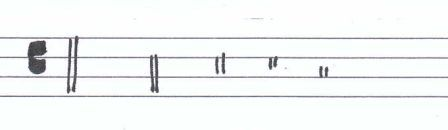
The mode is imperfect when these breves or tempora are computed through a binary number. It is said to be imperfect in the same way that the binary number is imperfect. Indeed, the ternary number is perfect having been taken from the Trinity - that is, the Father, Son and Holy Spirit - wherein there exists the highest perfection.
Images
[folio 57r] CLICK TO ZOOM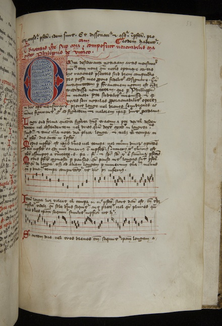
[folio 57v] CLICK TO ZOOM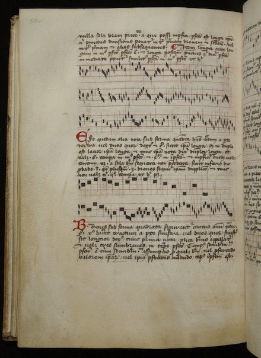
[folio 58r] CLICK TO ZOOM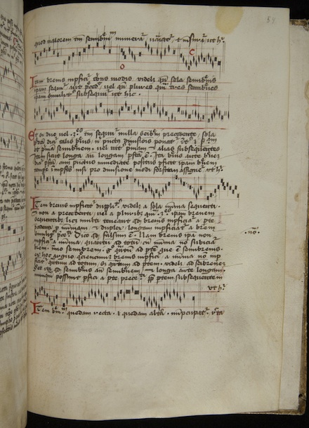
[folio 58v] CLICK TO ZOOM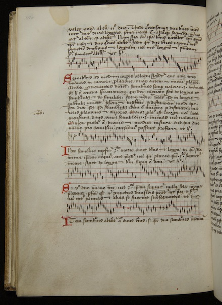
[folio 59r] CLICK TO ZOOM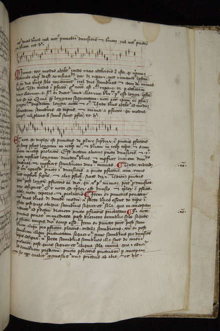
[folio 59v] CLICK TO ZOOM

[folio 60r] CLICK TO ZOOM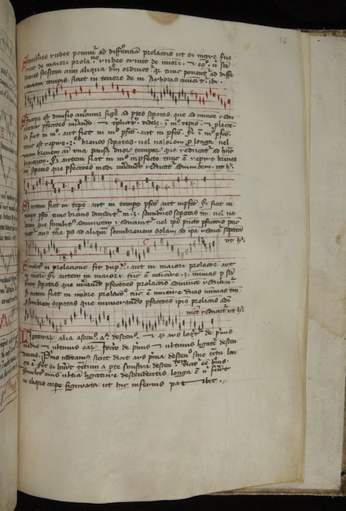
[folio 60v] CLICK TO ZOOM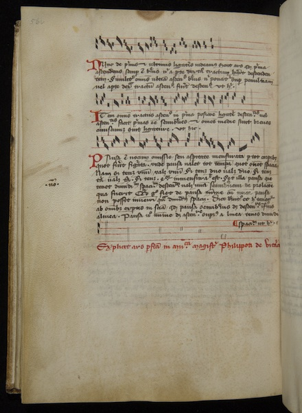